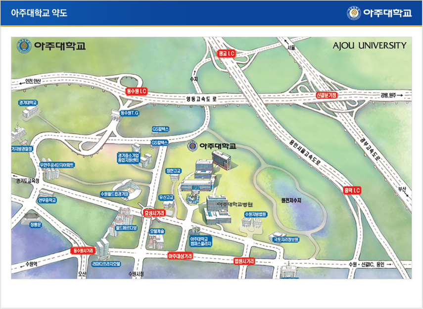
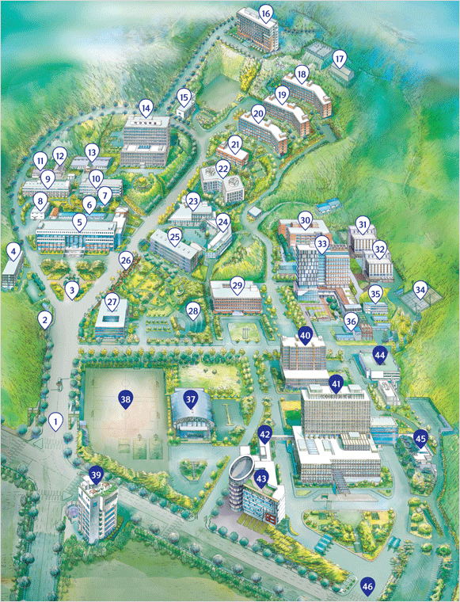

Information
Accommodations
- 숙소
- 실크로드호텔(http://hotelsilkroad.co.kr/v2_main/main.html)을 추천합니다.
- 참가를 희망하는 모든 학생분들에게는 10월 31일 1박에 대하여 실크로드호텔 2인 1실로 숙소를 지원해 드립니다.
- 실크로드호텔 1박 비용 (싱글룸 혹은 트원룸): 조식, 세금포함 99,000원
(아주대 수학과 행사 참가자임을 반드시 밝혀야만 위 가격으로 묵으실 수 있습니다.)
- 11월 1일 아침에는 실크로드호텔에서 아주대학으로의 셔틀이 제공될 예정입니다. (아주대학교와 약 3km 떨어진 위치에 있습니다.)
- Accommodations
- We recommend Silkroad Hotel (http://hotelsilkroad.co.kr/v2_main/main.html).
- We support accommodations for October 31st to all students (two students per room).
- Conference rate for 1 room at Silkroad Hotel: 99,000 KRW per night (breakfast and taxes are included) (This is the price only for participants of the workshop.)
- The shuttle bus between Silkroad Hotel and the Conference venue (Ajou Univsersity) will be arranged in the morning of November 1st. (The Silkroad Hotel is about 3 kilometers from the conference venue.)
Local Information
- 오시는 길

- [참조] 아주대학교 정문에서 팔달관 오시는 길

- 위의 지도에 표시된 웹페이지의 교내지도에서 팔달관은 14번 건물입니다.
- 아주대 정문(1번) 들어오셔서 분수대(3번)가 보이는 길에서 오른쪽으로 오시다가, (나무들 사이의) 왼쪽에 난 계단을 따라 올라오시면 팔달관 건물이 있습니다.
- 차량을 이용하시는 분은 분수대(3번)에서 오른쪽으로 오시다가, 지도상의 14번, 15번 건물 사이에 난 길로 올라 오시면, 왼편에 팔달관 주차장이 있습니다.